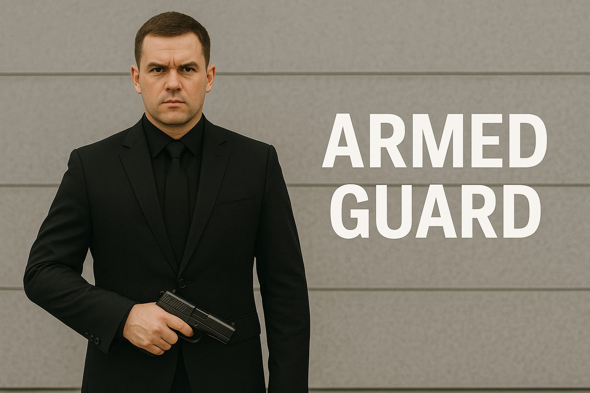

Segurança Armada Profissional
Com a Segurança Armada da Front Security, você conta com proteção especializada para situações que exigem presença firme, pronta resposta e alto nível de preparo operacional.
O que oferecemos
Nossos agentes armados são altamente treinados para atuar com precisão e dentro da legalidade, protegendo pessoas, cargas e patrimônios com disciplina e inteligência operacional. Atuamos com:
- Prevenção e neutralização de ameaças reais
- Proteção em áreas de risco elevado
- Segurança de executivos e autoridades
- Escolta armada de cargas e valores
- Controle rígido de acesso em locais sensíveis
- Pronta resposta em situações emergenciais
Diferenciais da nossa segurança armada
Não se trata apenas de portar uma arma, mas de estar preparado psicologicamente, tecnicamente e legalmente para agir com responsabilidade. Nossos diferenciais incluem:
- Agentes com formação específica e reciclagem constante
- Supervisão 24h com canais diretos de apoio
- Equipamentos modernos e comunicação eficiente
- Planejamento de ação conforme nível de risco
- Relatórios completos com registros de ocorrências
Por que contratar segurança armada?
Em ambientes onde o risco é alto, a presença de um agente armado treinado faz toda a diferença. Com a Front Security, você garante segurança com autoridade, estratégia e controle absoluto da situação.
Solicite uma proposta personalizada
Entre em contato com nosso time comercial e receba um orçamento feito sob medida. Fazemos análise de risco, visitas técnicas e planejamento detalhado para garantir a proteção que você precisa.
Solicitar Orçamento no WhatsApp